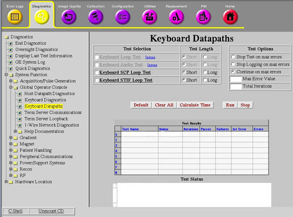
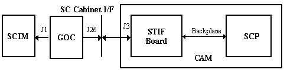

Operating Documentation
Direction 5500113, Rev# 3
Discovery MR450 1.5T Service Methods
Module Version 3.0, Version Date 8/19/08
Operating Documentation |
Diagnostics >> System Function >> Keyboard Datapaths
Diagnostics >> Hardware Location >> Keyboard Datapaths
Illustration 1: Keyboard Datapaths

This diagnostic tests the audio output capability by testing the SCIM communication path. It sends a high-pitched audio command to the keyboard processor.
SCIM communication path
None
Illustration 2: SCIM to SCP Block Diagram

Before running this test, verify that the manual dial for volume control is set to its maximum setting.
1. Click [Run].
If the keyboard audio output is faulty, this test will not fail.